Κωνσταντινος
Παναγιωτης
Ζεϊμπεκης
Φωτογραφος
Ζωγραφος
Μοντερ
Συντηρητης
Αρχαιοτητων
& Εργων Τεχνης
Constantinos
Panayiotis
Zeybekis
Photographer
Painter
Monteur
Conservator
Of ancient
Artworks
Linktree
εισαγωγη 
Καλως ορισατε στην σελιδα εισαγωγης photozeybekis
Αυτή η σελίδα είναι Portfolio που περιέχει βιογραφικό και webgallery εικόνων και βίντεο του καλλιτέχνη Ζεϊμπέκη Κωνσταντίνου Παναγιώτη καθώς επίσης η σελίδα φτιάχτηκε από τον ίδιο με γλώσσα προγραμματισμού HTML και CSS. Παρακαλώ συνεχίστε την εξερεύνηση και ελπίζω να απολαύσετε τις δουλειές του καλλιτέχνη
Introduction 
welcome to Introduction page of photozeybekis
This Portfolio Webpage contains CV and webgallery of media like images and videos from artist Constantinos Panayiotis Zeybekis, he created this page with programming languages HTML and CSS as well. Please proceed the exploration and we hope you enjoy the artist's artworks
Λιγα λογια για μενα
Few words about me
Ονομάζομαι Κωνσταντίνος Παναγιώτης Ζεϊμπέκης η αλλιώς Ντίνος, Είμαι 24 ετών από την Πετρούπολη, Aσχολούμαι γενικότερα με τον καλλιτεχνικό τομέα, όπως με συντήρηση έργων τέχνης, ζωγραφική, σχέδιο, γραφιστικά, φωτογραφία, μοντάζ και χειρονακτικά. Μου αρέσει πολύ περισσότερο η ζωγραφική, ασχολούμαι από παιδί με το σχέδιο και εξασκούμαι μέχρι σήμερα, μπορώ να πω ότι με βοήθησε πολύ και στον τομέα της φωτογραφίας γιατί έχουν πολλά κοινά και σε βάζουν σε διαδικασία έμπνευσης και σκέψης.
Μου αρέσει να εξερευνώ και να μαθαίνω νέα πράγματα πάνω στην φωτογραφία, ενδιαφέρομαι να έχω καλές σχέσεις επάνω στον επαγγελματικό τομέα με συναδέλφους γιατί μου αρέσει η ομαδικότητα και η συνεργασία, πιστεύω πως με καλή θέληση, χαμόγελο και επικοινωνία μπορούμε σαν φωτογράφοι να καταφέρουμε πολλά.
My name is Constantinos Panayiotis Zeybekis or Dinos, I'm 24yo and i live in Petroupoli City, I am generally involved in the artistic field, such as art conservation, painting, drawing, graphic design, photography, montage and handicrafts. I like painting a lot more, I have been involved in drawing since I was a child and I practice to this day, I can say that it helped me a lot in the field of photography as well because they have a lot in common and put you in a process of inspiration and thinking.
I like to explore and learn new things about photography, I am interested in having good relationships in the professional field with colleagues because I like teamwork and cooperation, I believe that with goodwill, a smile and communication we can achieve a lot as photographers.
Επαγγελματικη Εμπειρια
professional Experience
- 2015,2019 - Παραγωγή Άρτου/Γλυκού & Πώληση Προϊόντων - Η Γαρδένια
- 2019-2021 - Καταχώρηση Προϊόντων σε Eshop (Wordpress) - Mediaclub.gr
- 2019-2021 - Φωτογράφιση Προϊόντων για Διαφήμιση - Stampariseto.gr
- 2021-2022 - Φωτογράφιση Παιδικών Πάρτυ, Πώληση Προϊόντων - Photometal
- 2015,2019 - Bread/Sweet Production & Vendor - Gardenia Bakery
- 2019-2021 - Product Posting to Eshop (Wordpress) - Mediaclub.gr
- 2019-2021 - Commercial Photoshooting - Stampariseto.gr
- 2021-2022 - Photoshooting Childen Parties - Photometal
Επαγγελματικες Δεξιοτητες
professional Skills
Adobe Photoshop
Adobe Premiere
MS Office Word
MS Power Point
HTML & CSS
GR
Γραμμικο Σχεδιο
Ελευθερο Σχεδιο
Ζωγραφικη
EN
line drawing
Sketch Drawing
Painting
Ενδιαφεροντα
interests
Ζωγραφική, Φωτογραφία, Επεξεργασία Εικόνας, Επεξεργασία Βίντεο, Μοντάζ, Ελεύθερο Σχέδιο
Painting, Photography, Photo Editing, Video Editing, Montage, Sketch Drawing
Ικανοτητες-Προσοντα
abilities
- Χρήση (Windows και Macintosh)
- Οργανοτικότητα
- Προσαρμοστικότητα
- Τυπικότητα
- Διαχείριση Χρόνου
- Χρήση Εκτυπωτών Mitsubishi,DNP,Epson Stylus Photo T50,Epson L3251
- Can use (Windows and Macintosh)
- Organization
- Adaptation
- Typical
- Good time management
- Can use Mitsubishi,DNP, Epson Stylus Photo T50, and Epson L3251 printers
Εκπαιδευση
education
Φωτογραφια και Οπτικοακουστικες Τεχνες στο ΠΑ.Δ.Α.
Photography and audiovisual arts in UNI.W.A.
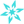
Συντηρηση Αρχαιοτητων και εργων Τεχνης στο
ΕΠΑ.Λ. Πετρουπολης
Conservation of ancient artworks in technical
high school of Petroupoli city
Γενικες γνωσεις σχεδιου απο Φροντιστηριο
Τσιγκρης και Μπελντεκος
General Knowledge of Painting and Sketching
from Tsigris and Beltekos Schools
Γνωσεις Αγγλικων με επιπεδο B2
English Knowledge level B2
Γνωσεις Ιταλικων με επιπεδο Β1
Italian Knowledge level B1
Θεμα: Ασπρομαυρο
subject: black and white
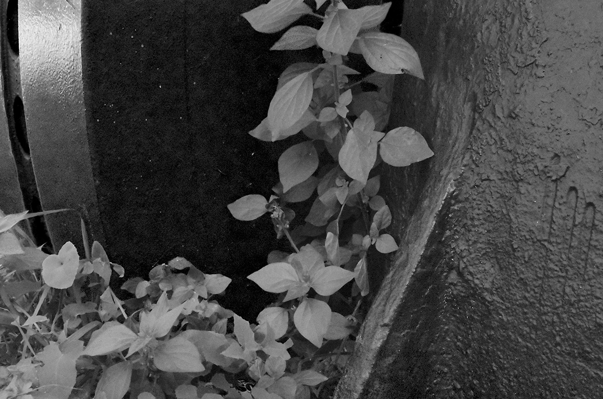
 Αναγέννηση
Αναγέννησηrebirth
 Ρύπανση
Ρύπανσηpollution
 Τρόμος
Τρόμοςhorror
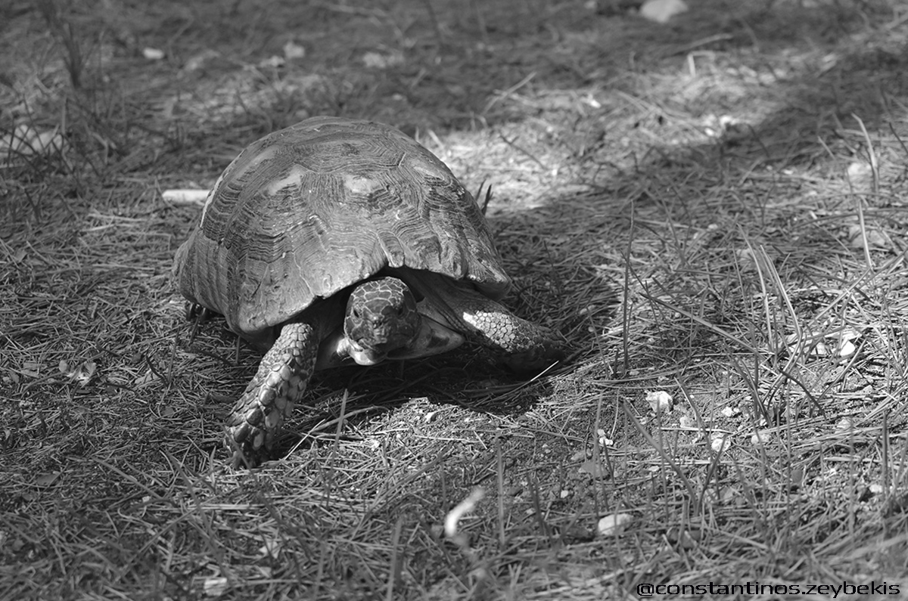Ψάχνωsearching
 Φροντίδα
Φροντίδαcare
 Ιστορία
Ιστορίαhistory
 Έξοδος
Έξοδοςescape
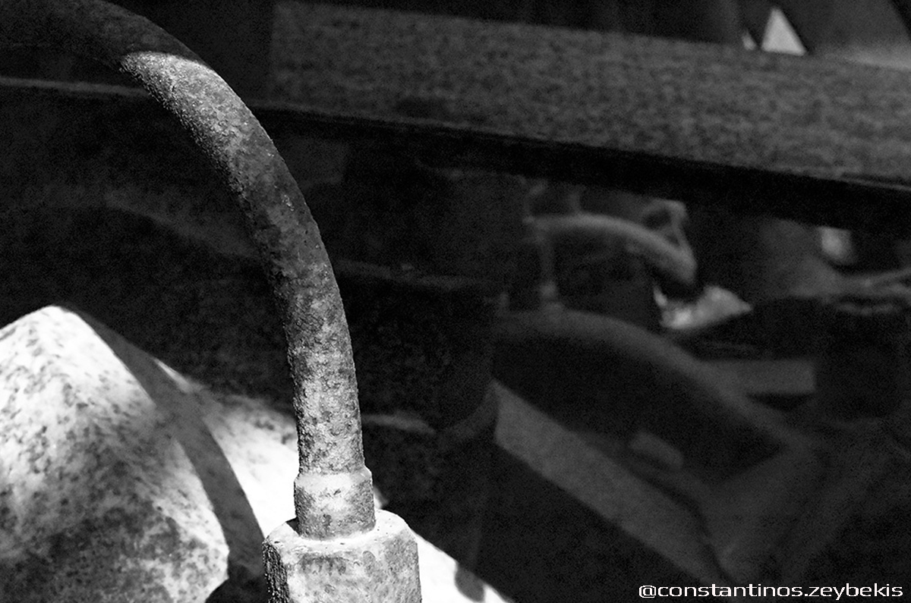Αδιέξοδοςimpasse
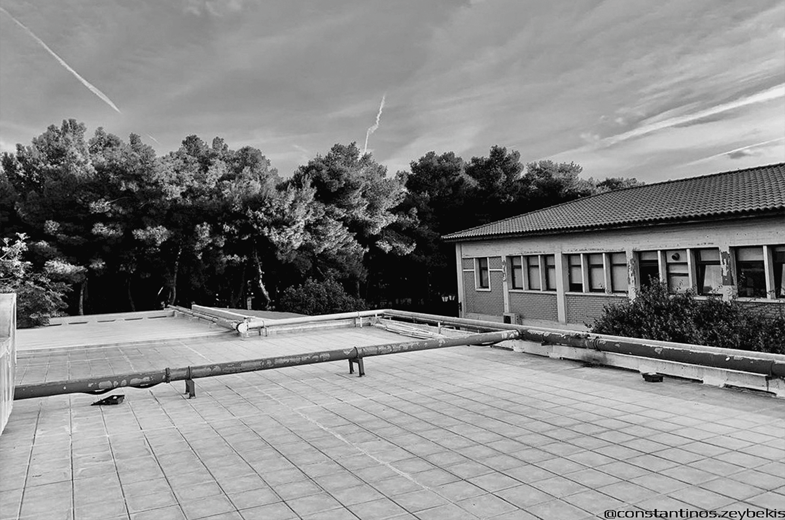Μην τα παρατάς!never give up!
Θεμα: Φυση
subject: nature
 Κυριαρχία
Κυριαρχίαdomination
 Προστασία
Προστασίαprotection
 Βαδίζω
Βαδίζωwalking
 Εμπόδιο
Εμπόδιοobstacle
 Μπέρδεμα
Μπέρδεμαconfusing
 Άγριο
Άγριοwild
 Απέραντο
Απέραντοinfinite
 Αναζητώ
Αναζητώsearch for
Θεμα: Μυστηριο
subject: mystery
 Ελπίδα
Ελπίδαhope
 Περιέργεια
ΠεριέργειαCuriosity
 Τύφλωση
Τύφλωσηblindness
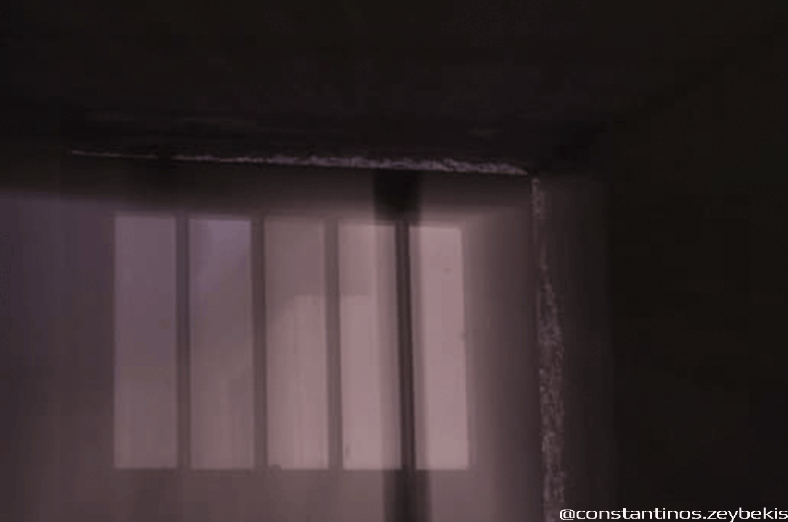ΟξυγόνοOxygen
 Λαϊκή Αγορά
Λαϊκή ΑγοράShopping District
 Πτώση
Πτώσηfall
 Περιμένοντας
Περιμένονταςwaiting
 Μοναξιά
Μοναξιάlonely
Θεμα: Διαφορα
subject: various images
 Ελευθερία
Ελευθερίαfreedom
 Μετρό Μοναστηράκι
Μετρό Μοναστηράκιmonastiraki station
 Κλειδωμένη Αγάπη
Κλειδωμένη ΑγάπηForbidden love
 Όμορφο Παρελθόν
Όμορφο ΠαρελθόνBeautiful past
 Πέτα
Πέταfly away
 Χωρίς Επιστροφή
Χωρίς Επιστροφήwithout returning
 Βιολετοκατάσταση
Βιολετοκατάστασηviolet vibes
 Μπλεδοκατάσταση
Μπλεδοκατάστασηblue vibes
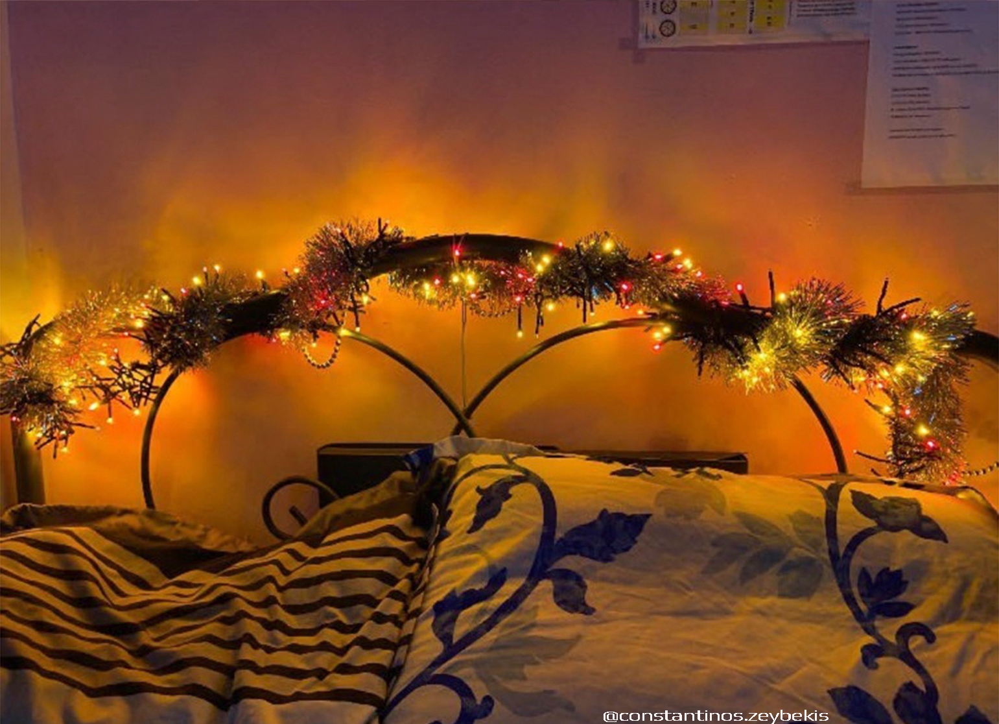Κιτρινοκατάστασηyellow vibes
 Ερωτοβασίλεμα
Ερωτοβασίλεμαbeautiful sunset
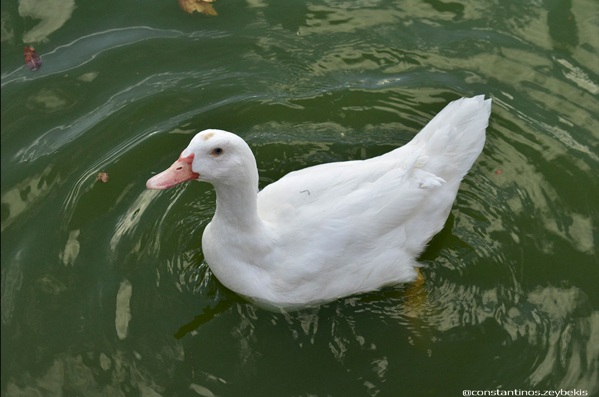Τι κοιτάς;what you look?
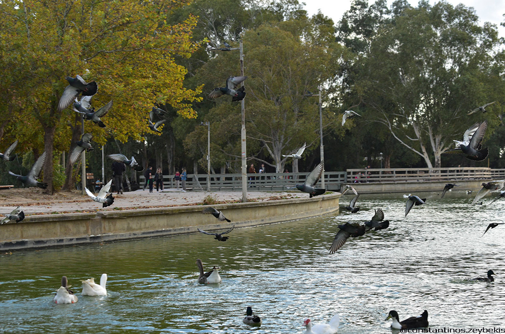Δικό μου δικό μουit's mine, mine!
 Λύτρωση
Λύτρωσηredemption
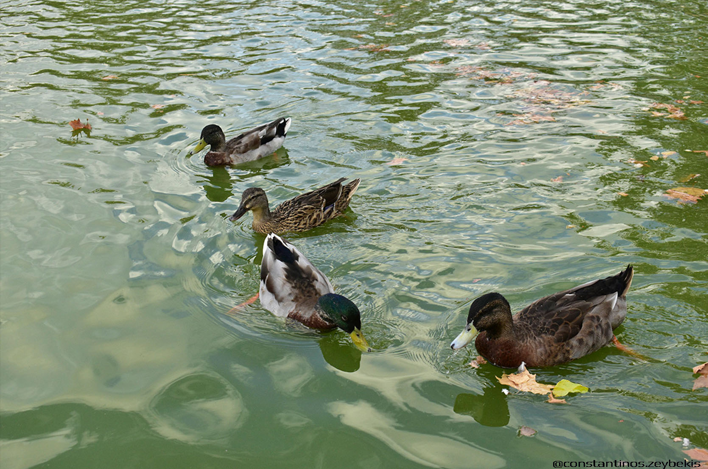Οικογένειαfamily
 Γνωριμία & ότι βγει
Γνωριμία & ότι βγειacquaintance & wtever comes up!
 Θεϊκή παρηγοριά
Θεϊκή παρηγοριάdivine consolation
 Φώτα Πόλης & Έρως
Φώτα Πόλης & Έρωςcity lights & love
 Με το κεφάλι ψηλά
Με το κεφάλι ψηλάwith head up
 Αυτό είναι δικό μου!
Αυτό είναι δικό μου!it belongs to me!
 Μπύρα και Παρέα
Μπύρα και Παρέαbeer and companionship
 Έρως ανίκατε μάχαν
Έρως ανίκατε μάχανundefeated love
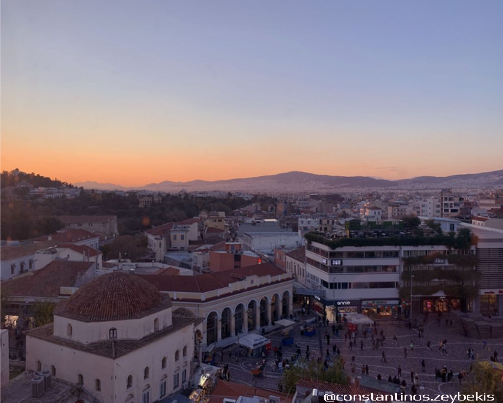Ήλιε μη φύγειςplz sun don't go!
 Αφήστε με εκεί!
Αφήστε με εκεί!leave me there
 Το δεύτερο μου σπίτι
Το δεύτερο μου σπίτιmy second home
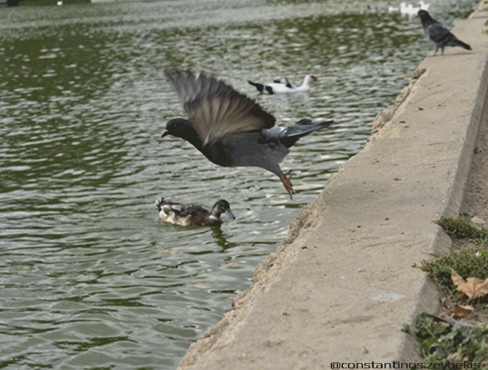Ή τώρα ή ποτέ!now or never
 Παπάκι το παπί
Παπάκι το παπίa cute duck
 Γραφείο και Παρέα
Γραφείο και Παρέαoffice and companionship
 Μόνο μαζί σου
Μόνο μαζί σουjust be only with you
 Μαντεία Ρόδου
Μαντεία Ρόδουrose Mancer
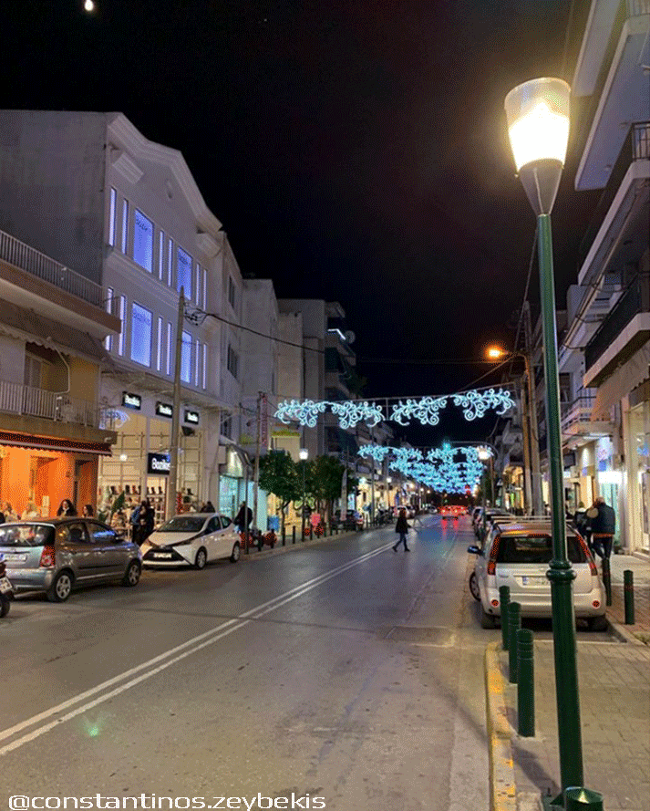Περιμένω πολύ!such a wait!
 Δρόμος με τις λεύκες
Δρόμος με τις λεύκεςthe elm street
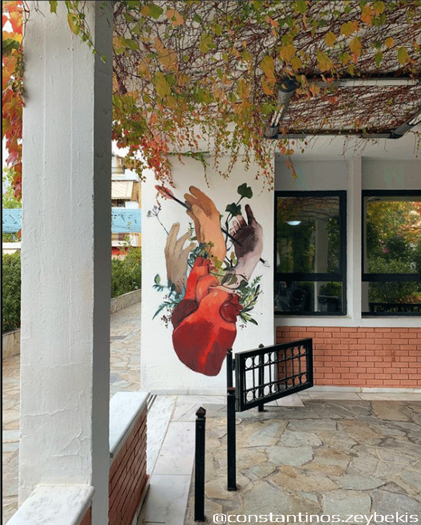Καλή Καρδιάgood heart
 Ντε ζα βου...
Ντε ζα βου...de ja vu
 Από την...
Από την...from...
 Αυτοσχέδια...
Αυτοσχέδια...impromptu...
 ...Μηχανή Πίνχολ
...Μηχανή Πίνχολpinhole camera
 Δέντρο της Ζωής
Δέντρο της Ζωήςthe tree of life
 Ξεραμένη Αγάπη
Ξεραμένη Αγάπηdead love
 Βόλτα και Βόλτα
Βόλτα και Βόλταkeep walking
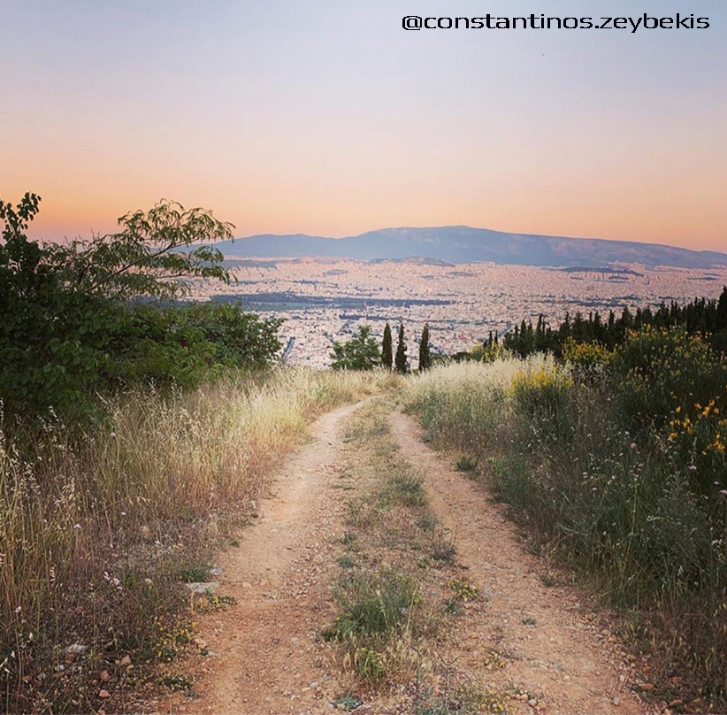Χαμόγελο Ψυχήςspiritual smile
διακοπτομενο βιντεο
stop motion
Διαφημιση Melitta - Φιλτρακια για μηχανη του καφε
Melitta Advertisement - filters for the coffee machine